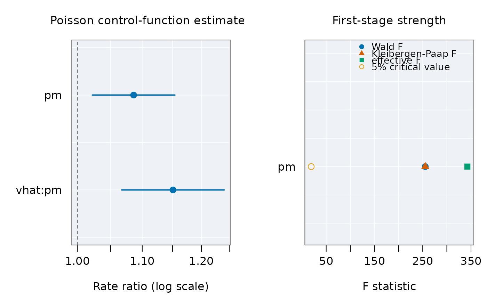

Instruments an exposure in the count model of ppmlfe(), in one of two
ways (how). The first stages regress each endogenous column on the
excluded instruments and the controls with the fixed effects (as in
ivfe()). Then:
Usage
ppmlcf(
data,
y,
endo,
inst,
x = NULL,
fe,
expo = NULL,
clus = NULL,
how = c("cf", "plug"),
se = c("boot", "naive"),
ssc = c("G", "nk", "none"),
nboot = 199,
seed = NULL,
level = 0.95,
tol = 1e-12,
maxit = 100,
family = c("poisson", "nb")
)
# S3 method for class 'ppmlcf'
print(x, ...)
# S3 method for class 'ppmlcf'
summary(object, ...)
# S3 method for class 'ppmlcf'
plot(x, ..., main = NULL, col = NULL, pal = NULL, terms = NULL)Arguments
- data, y, fe, expo, level, tol, maxit
As in
ppmlfe().- endo
The names of the endogenous columns.
- inst
The names of the excluded instruments, at least as many.
- x
NULLor the names of the exogenous controls. Forprint()andplot(), an object of classppmlcf.- clus
NULL(the first fixed effect) or the name of one cluster column: the unit the bootstrap draws and the naive errors cluster by.- how
"cf"or"plug".- se
"boot"or"naive".- ssc
The small-sample factor of the naive errors, as in
ppmlfe().- nboot
The number of bootstrap draws, at least 2.
- seed
NULL(the generator's current state) or one whole number.- family
"poisson"(the default) or"nb": the second stage's likelihood ("nb"needshow = "cf").- ...
Not used by
print()andsummary(); forplot(), passed to the base-graphics call.- object
An object of class
ppmlcf.- main
NULL(a default title) or one string.- col
NULL(the palette) or colours.- pal
NULL(the session palette, seeplotopt()) or a palette name forblpal().- terms
NULL(every coefficient) or the names of the terms to draw.
Value
An object of class ppmlcf, a list: coef (as in ppmlfe(),
the endogenous columns, the controls, then for "cf" the residual
terms "vhat:<endo>"); first (as in ivfe()); draws, the
bootstrap estimates (one row per draw; NULL for "naive"); nfail;
n; nsep; ncl; nboot; how, se; fe, clus and level;
with family = "nb", family and theta. summary() returns
coef.
Details
how = "cf" (the default), the control function: the first-stage
residuals are added to the Poisson pseudo-likelihood fit with the same
fixed effects and offset. The residual takes up the part of the exposure
that moves with unmeasured causes of the outcome; its own coefficient
tests whether the exposure was endogenous at all. With a log link this
is consistent when the first-stage residual enters the mean as a linear
index (Wooldridge 2014), and it is the default for that reason.
how = "plug", the fitted exposure (the exposure less its first-stage
residual) in place of the exposure in the Poisson fit: the second stage
as Bondy, Roth and Sager (2020, equation 3, p. 565) write it, with
"AQI-hat". With a log link the plug-in is not consistent in general
(the mean of exp() of a fitted value is not exp() of the mean); it
is offered to reproduce the paper's specification.
Standard errors (se): "boot" (the default), a cluster bootstrap that
refits both stages on each of nboot draws of the clusters of clus,
made on the R side with R's generator (so set.seed() or seed
reproduce them), each draw weighting a cluster by how often it was
drawn; "naive", the clustered errors of the second-stage Poisson fit
alone, which treat the first-stage residual or fitted value as data and
are therefore wrong (too small, as a rule): they are given only to
reproduce papers that report them. Bondy, Roth and Sager do not say how
their second-stage errors account for the first stage. The exponential
generalised method of moments of Mullahy (1997) and Windmeijer and
Santos Silva (1997), which needs no first-stage model, is expgmm().
The negative binomial second stage (family = "nb"). Feigenbaum and
Muller (2016, secs. 5-6 and table 2) model city homicides as negative
binomial with the population as the exposure (expo) and instrument a
city's use of lead pipes by its rail distance to the nearest lead
refinery, estimating "the IV negative binomial regressions following the
control function procedure described by Cameron and Trivedi (2013, p.
401-406)" with errors from "a bootstrap resampling at the city level".
Here the first stage is as above, by least squares on the instruments,
the controls and the fixed effects; the second stage is the negative
binomial maximum-likelihood fit (variance mu + mu^2 / theta, theta
estimated, as MASS::glm.nb() fits it) of the outcome on the
endogenous columns, the controls, the first-stage residuals, an
intercept and the fixed effects as indicator columns (not absorbed: a
negative binomial fit has no within transformation, and many levels
bring the incidental-parameter bias of a nonlinear model); se = "boot"
refits both stages on each draw of the clusters (rows of a cluster
drawn twice enter twice), "naive" takes the clustered sandwich of the
second stage alone. Separation is checked as for the Poisson fit. A
systematic review of individual-level studies of lead and crime is
Talayero et al. (2023); see cemtch().
Karamik and von Graevenitz (2022, eqs 2-3) use the control function
with the wind sectors of windiv() as instruments (one set per region),
area, weekday and month-year effects, the group's population as the
offset (expo) and a bootstrap of both stages with the groups as
clusters and 1,000 draws (se = "boot", nboot = 1000); Batkeyev and
DeRemer (2023, appendix) report the same design beside their linear one.
Separation is handled as in ppmlfe() (groups of zeros dropped), in the
full sample and in each draw; a draw that cannot be fitted (an
instrument without variation in it, say) is left out and counted in
nfail. The first-stage table is that of ivfe(), clustered by clus.
plot() draws the rate ratios with their intervals on a log
scale and the first-stage F statistics beside the 5% critical value
of the effective F; it returns a list of what it drew (coef,
first).
References
Bondy, M., Roth, S. and Sager, L. (2020). Crime is in the air: the contemporaneous relationship between air pollution and crime. Journal of the Association of Environmental and Resource Economists, 7(3), 555-585. doi:10.1086/707127
Wooldridge, J. M. (2014). Quasi-maximum likelihood estimation and testing for nonlinear models with endogenous explanatory variables. Journal of Econometrics, 182(1), 226-234. doi:10.1016/j.jeconom.2014.04.020
Feigenbaum, J. J. and Muller, C. (2016). Lead exposure and violent crime in the early twentieth century. Explorations in Economic History, 62, 51-86. doi:10.1016/j.eeh.2016.03.002
Karamik, Y. and von Graevenitz, K. (2022). Gone with the wind: the effect of air pollution on crime. Evidence from Germany. ZEW Mannheim working paper. doi:10.2139/ssrn.4130091
Batkeyev, B. and DeRemer, D. R. (2023). Mountains of evidence: the effects of abnormal air pollution on crime. Journal of Economic Behavior and Organization, 210, 288-319. doi:10.1016/j.jebo.2023.04.009
Examples
# simulated counts; the shock u raises pollution and crime together
set.seed(3)
d <- expand.grid(day = 1:50, area = 1:15)
d$wind <- runif(nrow(d), 0, 360)
w <- windiv(d$wind, width = 90)
d <- cbind(d, w)
u <- rnorm(nrow(d), 0, 0.5)
d$pm <- 2 * w[, 1] - w[, 3] + u + rnorm(nrow(d))
d$crimes <- rpois(nrow(d), exp(1 + 0.1 * d$pm + 0.5 * u))
f <- ppmlcf(d, "crimes", endo = "pm", inst = colnames(w),
fe = c("area", "day"), nboot = 49, seed = 1)
f
#> ppmlcf: Poisson control function, 750 rows, fixed effects area and day; 49 bootstrap draws of 15 clusters (area)
#> term est se stat p lo hi rr
#> pm 0.08266 0.03095 2.671 0.0075737 0.02199 0.1433 1.086
#> vhat:pm 0.14047 0.03845 3.654 0.0002587 0.06512 0.2158 1.151
#> first stage: robust Wald F, Kleibergen-Paap rk Wald F, effective F, its keff and 5% critical value (tau 10%):
#> endo wald kp eff keff cv ninst
#> pm 255.2 255.2 342.5 2.151 18.98 3
plot(f)

# the paper's plug-in, with its naive errors
summary(ppmlcf(d, "crimes", endo = "pm", inst = colnames(w),
fe = c("area", "day"), how = "plug", se = "naive"))
#> term est se stat p lo hi rr
#> 1 pm 0.07803114 0.02424708 3.218167 0.001290126 0.03050775 0.1255545 1.081156